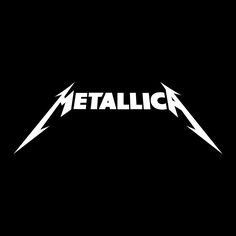

Derivados del Heavy Metal |
Tipo |
Descripción |
Ejemplo ilustrado |
Metal Alternativo |
El metal alternativo es un subgénero del heavy metal
que posee varias características del rock alternativo y de sus
subgéneros. Alcanzó popularidad en la década de 1990. |
|
Thrash Metal |
El thrash metal es un subgénero más agresivo del heavy metal que se caracteriza
específicamente por sus ritmos pesados similares al metal extremo, NWOBHM, speed metal, biker metal
y hardcore punk en agresividad y contundencia. |
 |
Folk Metal |
El folk metal es un subgénero del heavy
metal desarrollado principalmente en Europa a partir de
1990. Como el nombre sugiere este género es una fusión de
las distintas vertientes del heavy metal con la música folk
tradicional, por lo que incluye un amplio uso de instrumentos
y cantos tradicionales. |
|
Funk Metal |
Funk metal es un género musical que surgió con
la fusión de la música de la década de los ochenta incorporando los
elementos de funk y heavy metal, este último normalmente alternativo,
sobre todo en sus inicios. |
 |
Metal Industrial |
El metal industrial es un subgénero del heavy metal que
mezcla el mismo con la música industrial (ya sea industrial clásico,
electro-industrial o EBM). Entre los principales artistas del generó se
incluyen a Ministry, Godflesh, KMFDM, Rammstein y Nine Inch Nails. |
|
Nu Metal |
El nu metal, es un género musical de fusión, que combina elementos
del heavy metal, con otros géneros, como el hip hop, el grunge, el rock alternativo
y el funk. El género tuvo gran éxito comercial a finales de los 1990 y principios de
los 2000. |
|
Rap Metal |
El rap metal es un género
musical nacido a mediados de los años 1980,
teniendo como base a artistas de rap rock y
consolidado a inicios del año 1990 en Estados
Unidos. |
|
Luis Angel Mondragón Velazquez |